Myślę, że ten chłopiec bardzo lubi czytać i uczyć się.
Być może w przyszłości on będzie profesorem.
Będzie pracować na uniwersytecie, będzie pisać książki i uczyć studentów.
Proszę dopasować teksty do zaimków osobowych.
Proszę porozmawiać z koleżanką / kolegą. Proszę zapytać: „Co będziesz robić…?”. Proszę używać słów z ramki.
dzisiaj wieczorem
jutro
pojutrze
w następny wtorek
za trzy dni
za tydzień
za miesiąc
za rok
w przyszłym tygodniu
w przyszłym miesiącu
w przyszłym roku
na pewno (100%)
być może (50%)
na pewno nie (0%)
Wiktor: Co będziesz robić dzisiaj wieczorem?
Zosia: Dzisiaj wieczorem na pewno będę czytać książkę i…
Wiktor: Moja koleżanka / Mój kolega dzisiaj wieczorem na pewno będzie czytać książkę i…
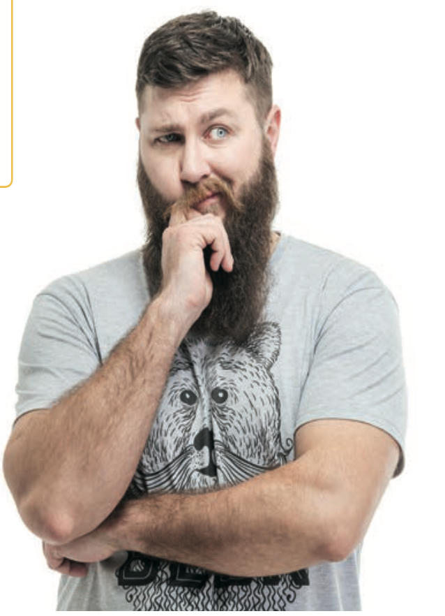
Proszę popatrzeć na fotografie i opowiedzieć o tych osobach.
Myślę, że ten chłopiec bardzo lubi czytać i uczyć się.
Być może w przyszłości on będzie profesorem.
Będzie pracować na uniwersytecie, będzie pisać książki i uczyć studentów.
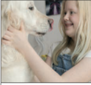
Myślę, że ta dziewczynka bardzo lubi …… .
Być może w przyszłości ona będzie …… .
Codziennie będzie pracować w przychodni weterynaryjnej, będzie …… .
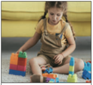
Myślę, że… .
Być może… .
Codziennie… .
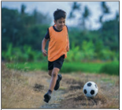
A. Proszę narysować ilustracje w pustych miejscach w tabeli, a potem proszę opowiedzieć o planach Ani i Adama.
Przykład: W styczniu Ania i Adam będą mieć ślub. W lutym oni…
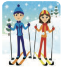
Proszę zapytać koleżankę / kolegę o jego wersję, a następnie proszę razem wybrać najbardziej interesującą historię.
Przykład: Co Ania i Adam będą robić w marcu?
A. Proszę zadać pytania do podkreślonych fragmentów zdań. Proszę używać słów podanych w ramce.
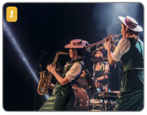
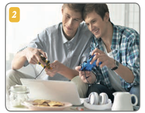
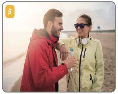
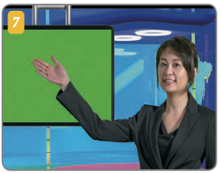
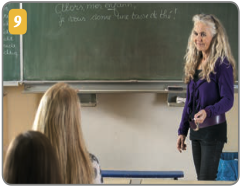
Przykład (Fot. 1.): Gdzie będziesz na koncercie jazzowym w następny czwartek?
Proszę używać słów podanych w ramce z ćwiczenia 5A. Proszę przygotować 5–6 pytań o plany na przyszłość i zadać je koleżance / koledze, zrobić notatki, a następnie opowiedzieć 3 ciekawe fakty o niej / o nim.
Przykład: Gdzie będziesz spędzać wakacje?
Proszę zadać pytania z tabeli koleżance / koledze, zanotować jej / jego odpowiedzi. Potem proszę je zaprezentować na forum.
| PYTANIE: | ODPOWIEDŹ: | |||
|---|---|---|---|---|
| 1. | Co będziesz | ☺ | robić jutro po południu? | Jutro po południu ona będzie chciała / on będzie chciał… |
| 2. | Co będziesz | ! | robić pojutrze? | |
| 3. | Co będziesz | OK | robić w przyszłym tygodniu? | |
| 4. | Co będziesz | ! | robić w następnym roku? | |
| 5. | Co będziesz | ! | robić w weekend? | |
| 6. | Co będziesz | ☺ | robić w wakacje? | |
| 7. | Co będziesz | OK | robić za 10 lat? | |
| 8. | Co będziesz | ☺ | robić, kiedy będziesz na emeryturze? | |
A. Proszę przeczytać tekst i odpowiedzieć na pytania:
Andrzejki to wieczór 29 listopada (ten dzień to imieniny Andrzeja), kiedy wszyscy w Polsce wróżą*.
Najpopularniejsza wróżba to lanie wosku*. Jak to się robi? Najpierw lejemy wosk przez klucz na wodę. Potem wyjmujemy woskową figurkę z wody i oglądamy jej cień na ścianie. Kształt*, który widzimy na ścianie, to wróżba na przyszły rok.
Dawno temu wróżby miały charakter matrymonialny. Młode kobiety spotykały się i wróżyły, żeby poznać imię swojego przyszłego męża. Dzisiaj andrzejkowe wróżby to forma zabawy dla dzieci i młodzieży np. w szkołach, a dla dorosłych np. w klubach.
Jest wieczór andrzejkowy 29 listopada. Pani / Pan razem z koleżanką / kolegą robią wróżby. Proszę wybrać 3 ilustracje (cienie na ścianie rzucane przez figurki z wosku) dla koleżanki / kolegi i powiedzieć, co pani / pana koleżanka / kolega będzie robić w przyszłym roku. Potem proszę zamienić się rolami.
Przykład:
Myślę, że to jest karta kredytowa.
To znaczy, że w przyszłym roku będziesz zarabiać dużo pieniędzy i…
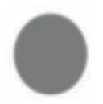
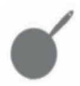
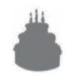
A. Pani / Pana koleżanka / kolega chce iść do wróżki, żeby poznać przyszłość. Prosi panią / pana o pomoc, ponieważ chce się przygotować do tej rozmowy. Proszę dokończyć listę pytań do wróżki. Proszę sugerować się ilustracjami, które są pod listą pytań.
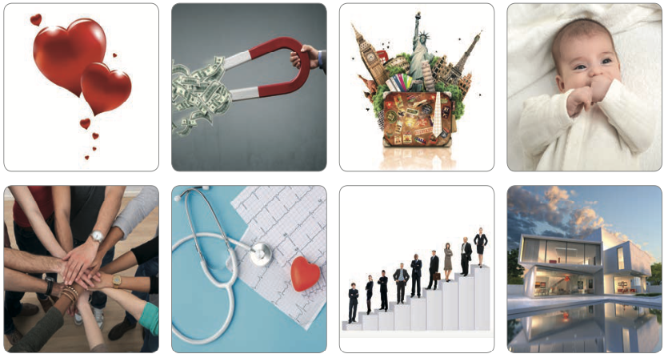
Pani / Pana koleżanka / kolega jest już u wróżki. Ma ze sobą listę pytań. Proszę odegrać rolę wróżki i odpowiedzieć na pytania koleżanki / kolegi.
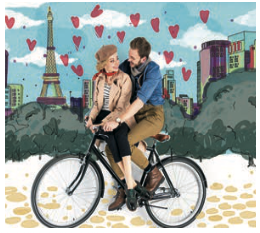
– Czy w przyszłym roku będę miała / miał szczęście w miłości?
– Tak, w przyszłym roku będzie miała pani / pan dużo szczęścia w miłości, ale dopiero latem. Widzę spontaniczną wycieczkę do Paryża, kawiarnię, rogaliki i tajemniczą osobę, która siedzi z panią / panem przy stoliku. Widzę też wspólne wycieczki rowerem nad Sekwaną. To początek wielkiej miłości. Mogę zasugerować kurs języka francuskiego już teraz.
–Ooo!…